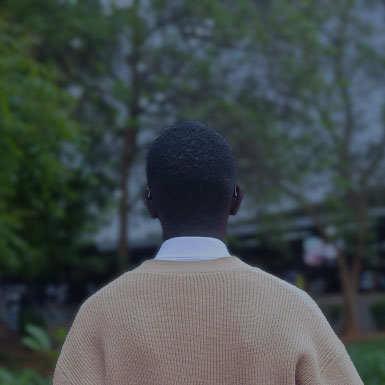

Meus Objetivos
Aqui estão meus objetivos para o intercâmbio e minha jornada rumo à Coreia do Sul:
1. Aprender coreano até o nível intermediário/avançado.
2. Conquistar uma vaga em uma universidade coreana.
3. Desenvolver projetos de tecnologia com colaboração internacional.
4. Construir uma rede de contatos acadêmicos e profissionais na Coreia.
